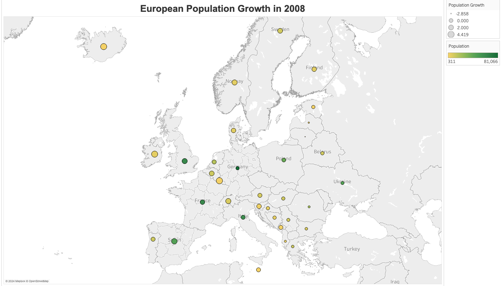

This dataset was taken from Gapminder through DataCamp, Introduction to Tableau.
Gapminder is an independent Swedish foundation with no
political, religious or economic affiliations that publishes datasets.
The dataset ranges from 1980 to 2008 and contains information about the health and
wellness of various contries in the world.

European Population Growth in 2008
Tableau is used to create the visualization of a symbol map. The data is filtered
to the most recent date, 2008, and focuses on European countries. The size of the
circles shows the population growth with the colors showing the population size.
Ireland has a small population of about 4K people, with a high population growth of
4%. This is contrasted by the UK, which has a large population of 62K with a low population
growth of 2%. Both Spain and Ukraine have a population of 46K with Spain's population
growing by 3% and Ukraine's declining by 1%.
It would be interesting to better understand why these trends emerge in the dataset.
References:
https://www.gapminder.org/about/